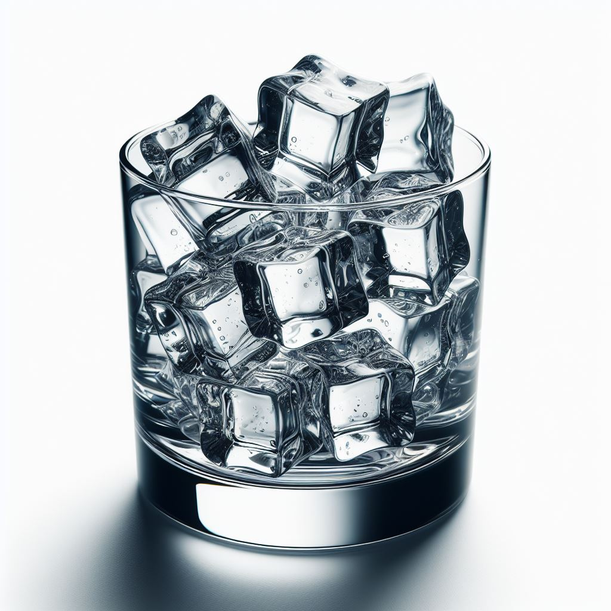

Ice Cubes
Tasty ice cubes!
Elevate your cooling game with these simple yet perfect homemade ice cubes. Whether you're enjoying a refreshing glass of water or your favorite cocktail, these ice cubes ensure your drink stays cold without compromising its flavor.
Ingredients
- Water
Recipe instructions
- Water Preparation: Begin by ensuring your water is clean and filtered for the best-tasting ice cubes. If your tap water doesn't taste great on its own, your ice cubes won't either.
- Ice Cube Tray Selection: Choose a clean ice cube tray. Silicone trays are excellent for easy removal, but any tray will work. Carefully pour water into each compartment of the ice cube tray, leaving a little space at the top for expansion.
- Leveling the Tray: Gently tap the filled tray on the counter to remove any air bubbles and ensure the water is level in each compartment.
- Freezing: Place the tray in the freezer and let it freeze completely. This typically takes a few hours.
- Removing the Ice Cubes: Once the ice cubes are fully frozen, remove the tray from the freezer. To release the ice cubes, twist or tap the tray gently.
- Storage: Transfer the ice cubes to a clean, airtight container if you don't plan to use them immediately. This prevents them from absorbing any unwanted odors from the freezer.
These homemade ice cubes are a fun and unconventional treat for those who enjoy the sensation of crunching on ice. Enjoy them on a hot day or whenever you crave a cool and satisfying snack.
Return to main page